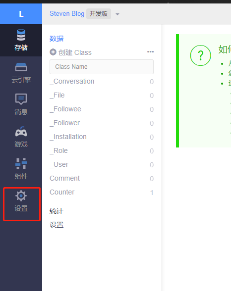
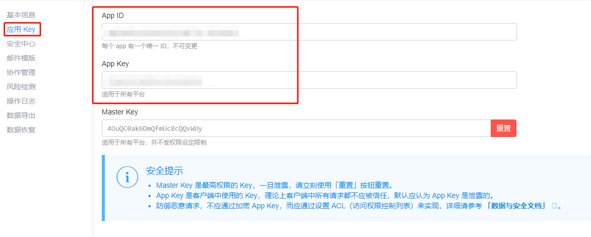
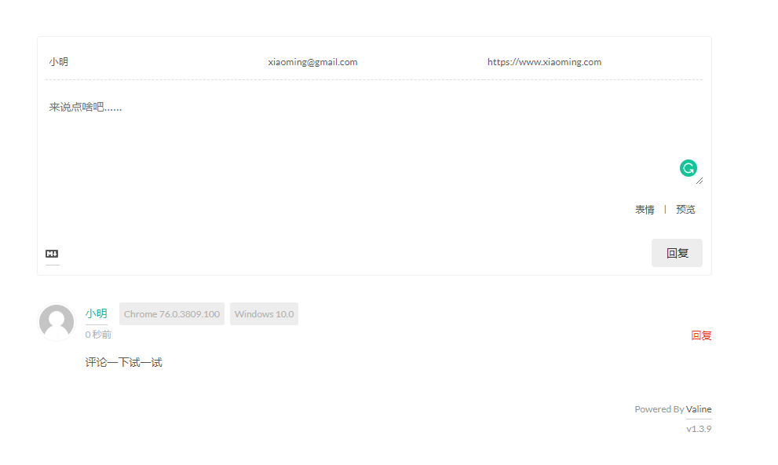
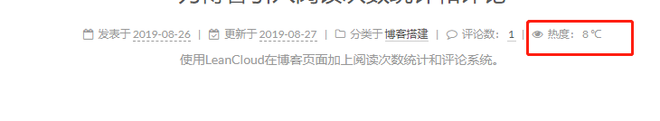

准备工作
- 注册一个LeanCloud账号，点击注册。
评论系统
登录LeanCloud
通过注册好的LeanCloud账号进入到LeanCloud控制台。
创建应用
首先点击创建
然后为应用取一个名字，选择开发版，点创建
创建Class
创建好应用之后，控制台主页就能看见创建好的应用，点击存储进入到存储相关的页面
然后点击创建Class，Class名称为Comment，访问限制调整为无限制，然后点创建Class
这样一个用于评论的数据存储就创建好了。
配置Valine评论系统
NexT主题支持很多种评论系统，更多信息请看NexT第三方服务集成-评论系统，这里使用的是Valine, Valine是依赖于LeanCloud的。要做的第一步就是获取到AppId和AppKey，点击左侧边栏的设置图标跳转到设置
继续点击应用Key，可以看到appId和appKey
打开主题配置文件./themes/主题目录/_config.yml，找到配置valine，将ID和KEY分别配置到appId、appKey。参考下面的配置1
2
3
4
5
6
7
8
9
10
11
12valine:
enable: true # 打开valine
appid: 改成你的AppId
appkey: 改成你的AppKey
notify: false # 邮件通知
verify: false # 验证码
placeholder: 来说点啥吧…… # 评论框没有内容的时候显示的
avatar: mm # 功能风格
guest_info: nick,mail,link # 定义评论头部的格式，昵称，邮箱，链接
pageSize: 10 # 多少条评论一页
visitor: true # 如果评论统计用的是leancloud的话，就设置为true
comment_count: true # 主页是否显示评论数量
开始评论
配置好了之后，通过hexo g -s本地部署一下看看
到此为止，评论系统就引入成功了。
访问量统计
创建Class
继续使用引入评论系统的时候创建的应用，在应用中创建名字为Counter的Class,同样是设置为无限制访问。
配置Leancloud_visitors
同样的，使用之前的AppId和AppKey配置1
2
3
4
5
6
7
8
9
10leancloud_visitors:
enable: true # 打开visitors
app_id: 改成你的AppId
app_key: 改成你的AppKey
# Dependencies: https://github.com/theme-next/hexo-leancloud-counter-security
# If you don't care about security in leancloud counter and just want to use it directly
# (without hexo-leancloud-counter-security plugin), set `security` to `false`.
# 上面的解释是，如果你不关心安全性，就设置为false, 不然就必须安装hexo-leancloud-counter-security插件才能设置为true. 一般设为flase就好了。
security: false
betterPerformance: false
开始统计访问量
配置好了之后，通过hexo g -s本地部署看看
这样，统计访问量就设置好了。